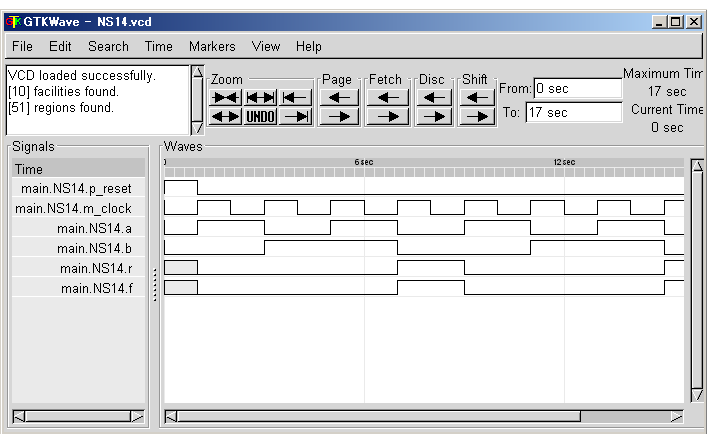

Register
NSL uses registers to hold data signals. Registers will hold on the rising edge of a clock signal (m_clock). We can refer and transfer value to registers but referenced value will be the data on last clock period.
Example-NS14
We will make a simulation on this circuitry as following command:
# ./exe NS14
The result will be available on your console.
We can see the wave form of this simulation as:
# ./exe -wave NS14
